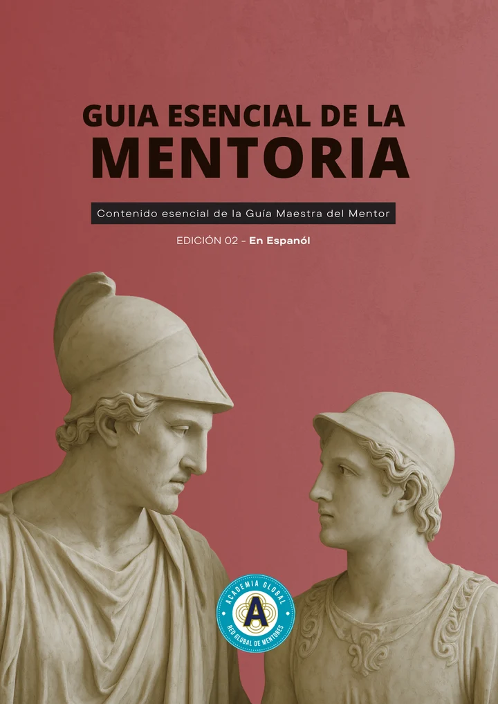

Guia
Guia Essencial da Mentoria
Suporte técnico do Programa Intensivo de Certificação
Desenvolvido como o suporte técnico fundamental do Programa Intensivo de Certificação, este guia funcional foi concebido para profissionais de diversas disciplinas que exigem uma formação rigorosa, precisa e orientada para a ação.
Com uma extensão superior a 100 páginas, a obra sintetiza o ecossistema teórico e técnico indispensável para a prática profissional. Atualmente, posiciona-se como um dos tratados mais exaustivos e atuais em língua espanhola e portuguesa, consolidando-se como uma referência incontornável na Ibero-América.